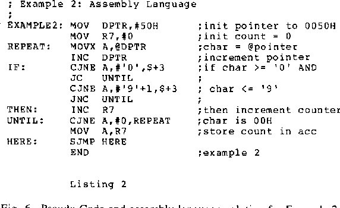

What Is a Malware Analyst?
A malware analyst is a cybersecurity professional who studies harmful software, such as viruses, ransomware, and spyware. They learn how these programs work and find ways to stop them.
Job Duties
- Examine suspicious files and programs.
- Identify how malware attacks computers.
- Find ways to detect and prevent malware.
- Write reports about security threats.
- Help protect computer systems and data.
Important Skills
- Problem-solving
- Knowledge of computer systems
- Programming skills
- Attention to detail
- Understanding of cybersecurity
Career Opportunities
Malware analysts can work for cybersecurity companies, government agencies, banks, and other organizations. Studying cybersecurity or computer science can help prepare someone for this career.